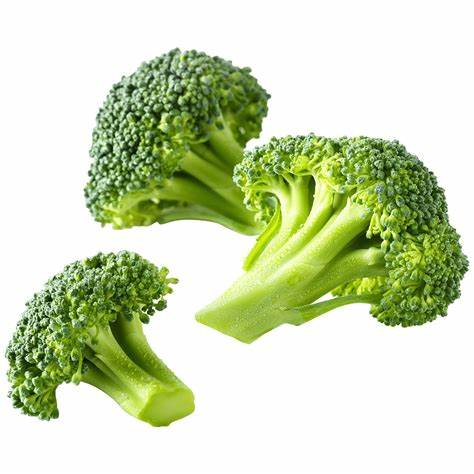
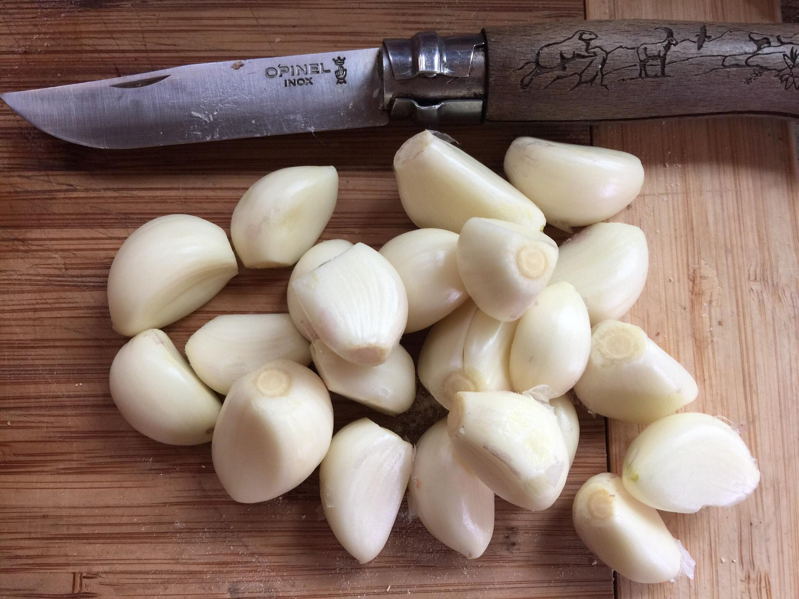

Ingredients
- 2 cups Broccoli florets 
- 1 cup Bell Peppers, sliced

- 1 cup Carrots, sliced

- 1 cup Snap Peas

- 1/2 cup Onion, sliced

- 2 tablespoons Soy Sauce
- 2 tablespoons Olive Oil

- 1 teaspoon Garlic, minced 
- Salt and Pepper to taste


Instructions
- Heat olive oil in a large skillet over medium-high heat.
- Add garlic and onion, sautéing until fragrant.
- Add broccoli, bell peppers, carrots, and snap peas to the skillet.
- Stir-fry the vegetables for 5-7 minutes until tender-crisp.
- Pour soy sauce over the vegetables and stir well.
- Season with salt and pepper to taste.
- Serve hot over rice or noodles.